Control Systems
This project performs comprehensive time-domain and frequency-domain analysis of DC motor control systems used in three industrial applications: a small robotic arm joint, a conveyor belt drive, and a heavy-duty robot. For each application, both armature-controlled and field-controlled DC motor configurations are analyzed — resulting in 6 complete case studies.
Each case study includes transfer function derivation, pole-zero mapping, step response analysis (rise time, settling time, overshoot), Bode plots, and stability margin evaluation (gain margin, phase margin). The analysis uses MATLAB's Control Systems Toolbox.
| Case | Application | Motor Type | Transfer Function G(s) |
|---|---|---|---|
| Case 1 | Small Robotic Arm Joint | Armature Controlled | 0.2 / (0.001s³ + 0.012s² + 0.02s + 0.04) |
| Case 2 | Small Robotic Arm Joint | Field Controlled | 0.2 / (0.001s³ + 0.012s² + 0.02s) |
| Case 3 | Conveyor Belt | Armature Controlled | 0.8 / (0.025s³ + 0.15s² + 0.2s + 0.64) |
| Case 4 | Conveyor Belt | Field Controlled | 0.8 / (0.025s³ + 0.3s² + 0.5s) |
| Case 5 | Heavy Duty Robot | Armature Controlled | 1.2 / (0.02s³ + 0.3s² + 0.8s + 1.44) |
| Case 6 | Heavy Duty Robot | Field Controlled | 1.2 / (0.02s³ + 0.23s² + 0.3s) |
A small robotic arm joint requires precise angular position control with minimal overshoot and fast settling time. The armature-controlled variant (Case 1) provides direct torque control through armature current manipulation, while the field-controlled variant (Case 2) offers smoother but slower response through field flux adjustment.
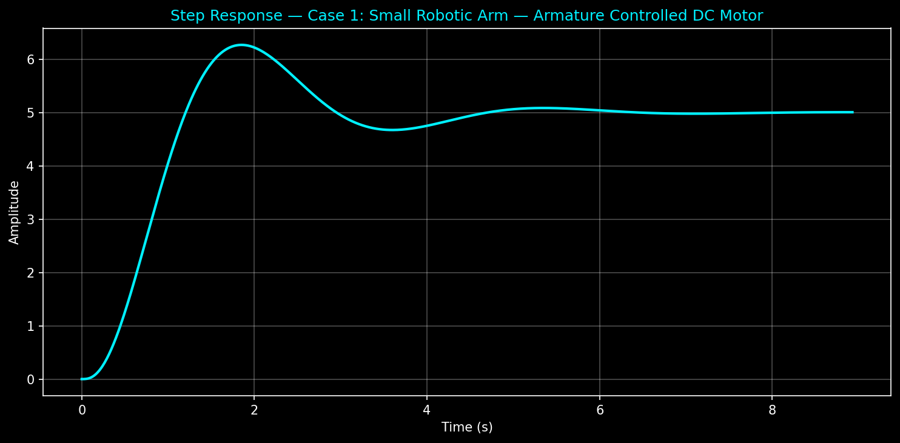
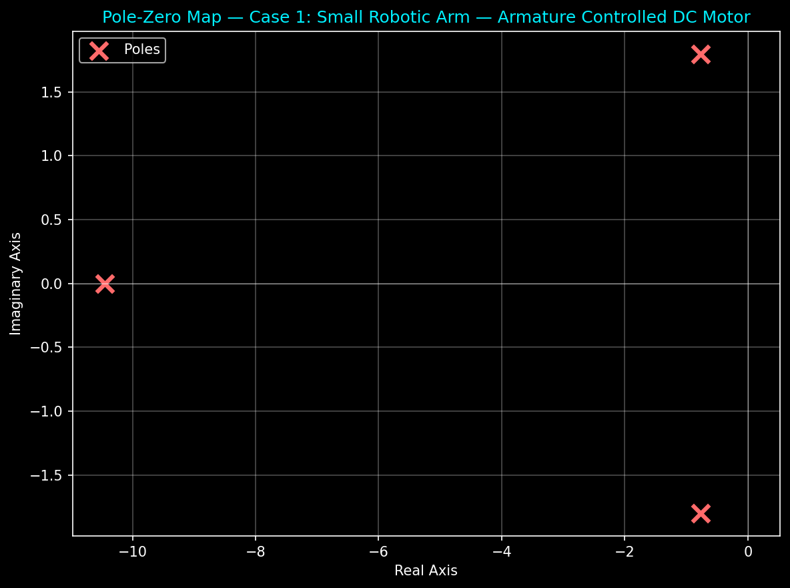
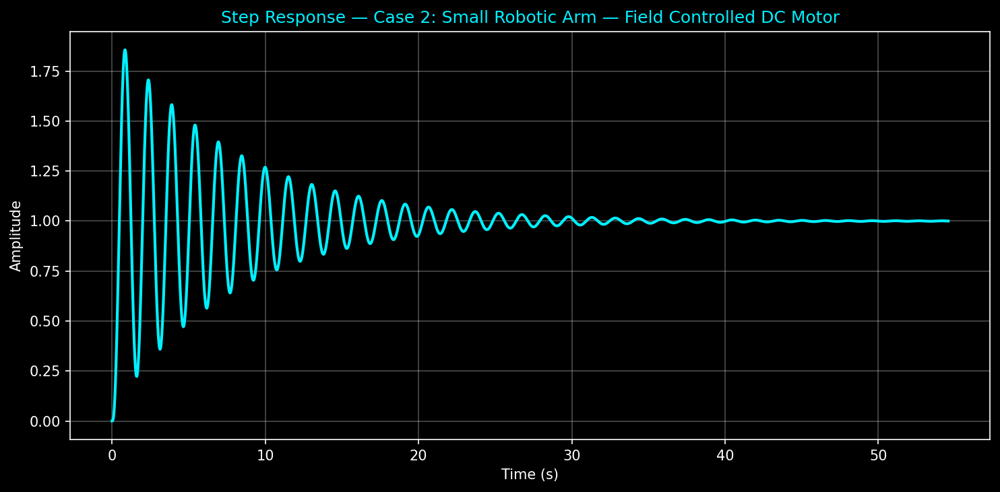
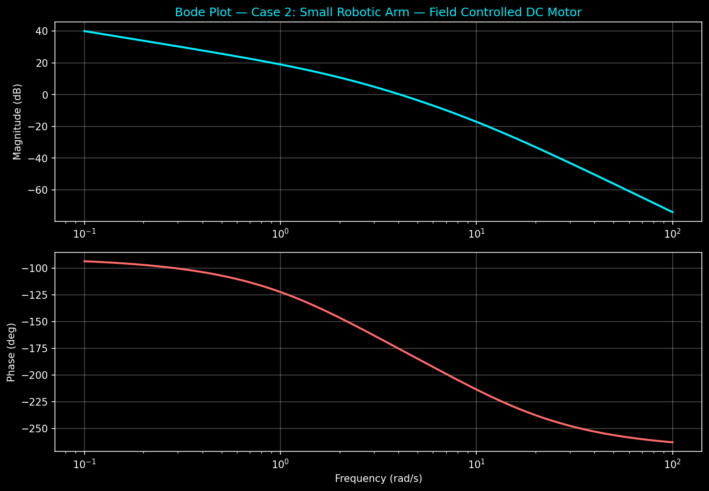
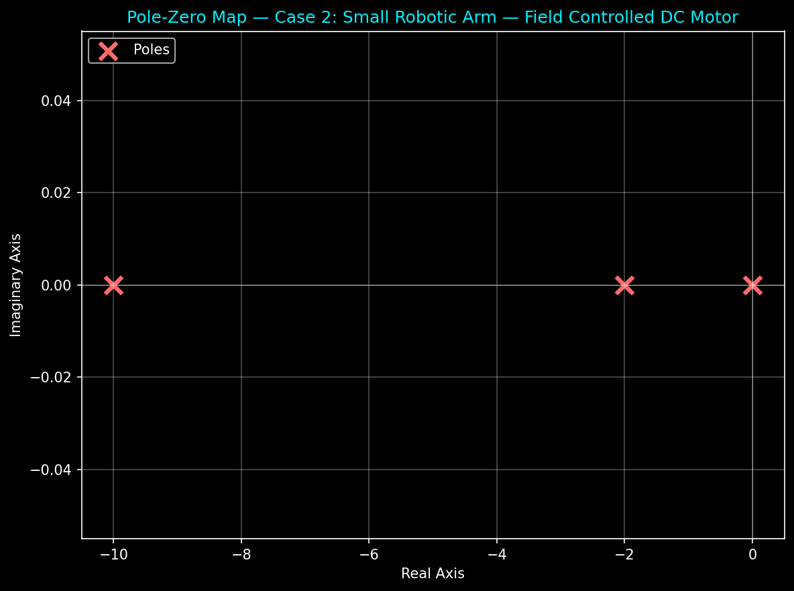
Conveyor belt systems require constant speed control under varying load conditions. The higher numerator gain (0.8) reflects the motor's higher torque requirement compared to the robotic arm. The field-controlled variant shows the characteristic zero at the origin (integrator), indicating type-1 system behavior for steady-state error elimination.
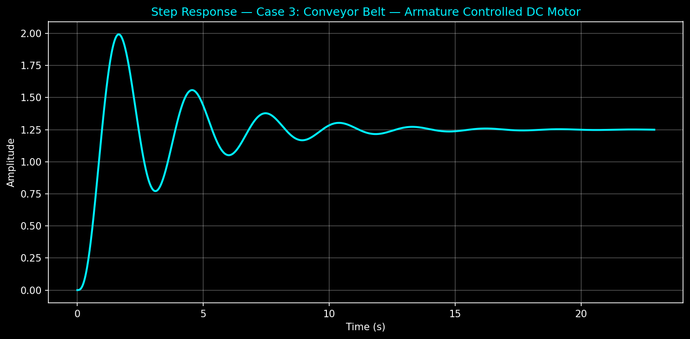
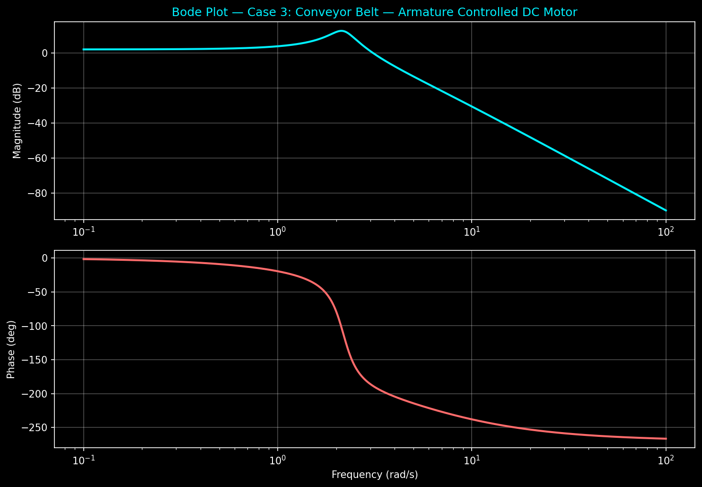
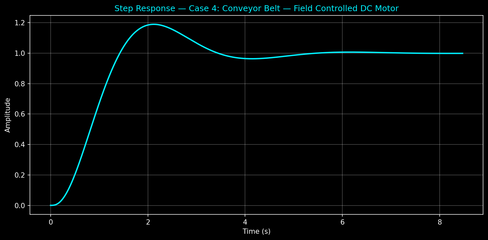
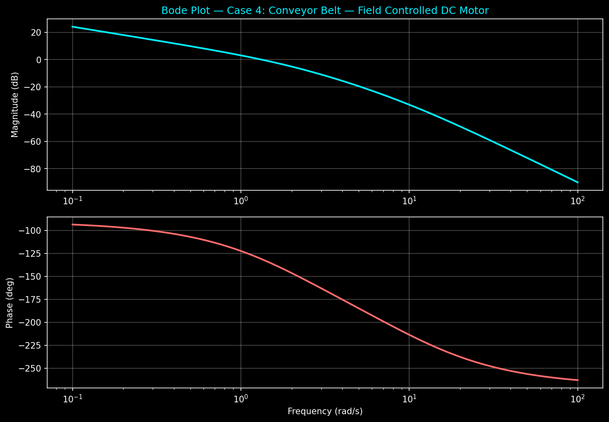
Heavy-duty robots demand high torque and robust stability under large inertial loads. The motor gain is 1.2, the highest among all three applications. The armature-controlled variant (Case 5) uses modified denominator coefficients for stability, while the field-controlled variant (Case 6) again shows type-1 system behavior with the integrator pole.
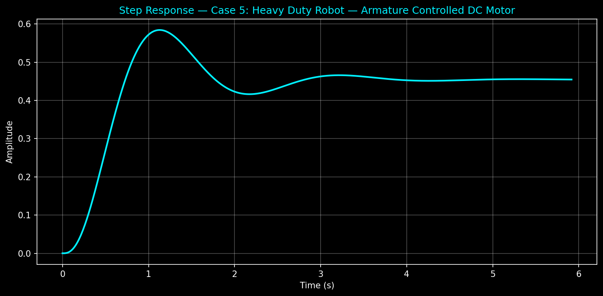
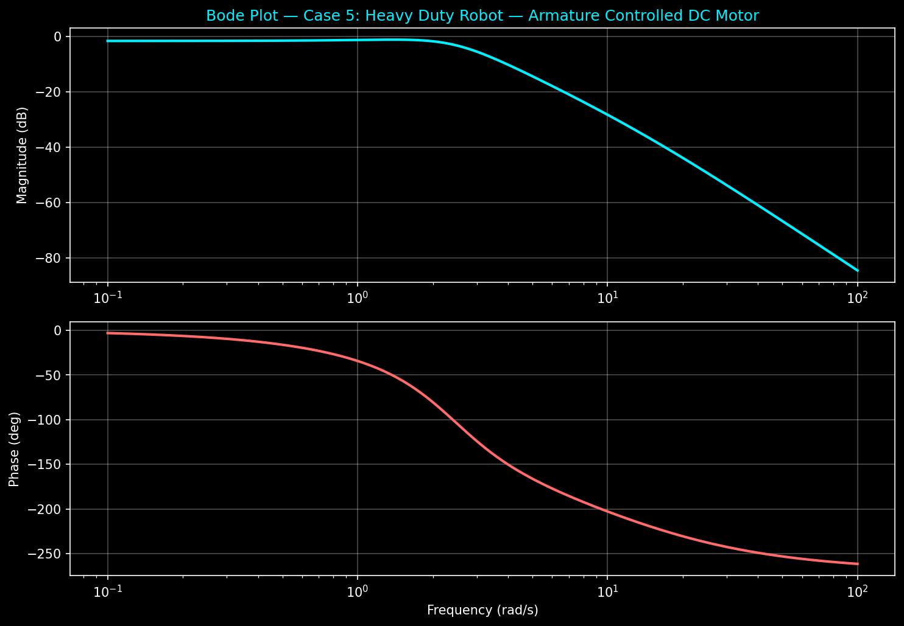
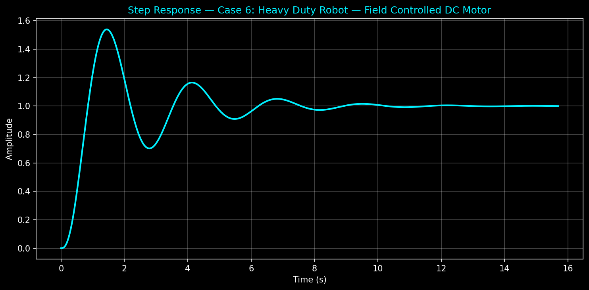
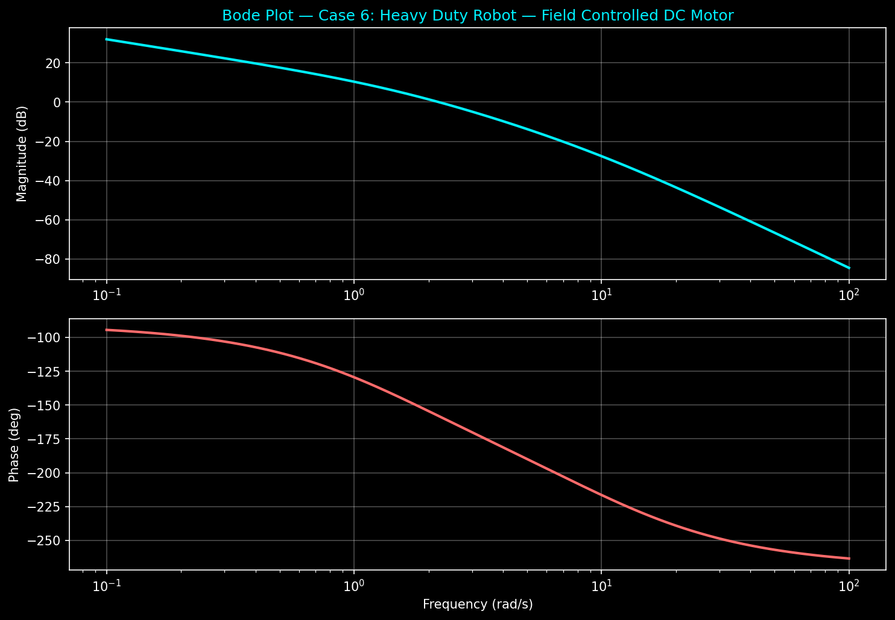
For each case study, the following systematic analysis was performed:
Poles and zeros of the open-loop transfer function are plotted on the s-plane to determine system stability (all poles in left half-plane → stable) and transient behavior (complex poles → oscillatory, real poles → exponential).
The unit step response is computed for the closed-loop system (unity feedback where applicable) to extract time-domain specifications:
Bode magnitude and phase plots are generated for the open-loop transfer function. Stability margins are extracted: